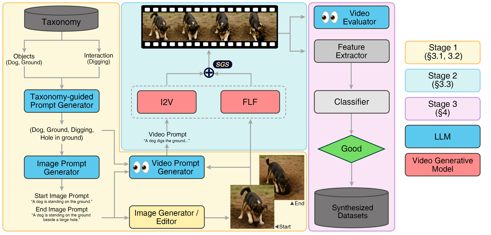

Project Page
1Seoul National University 2Sejong University
Current video generative models struggle to portray plausible physical interactions, limiting their use in robotics and VR/AR. To address this, we introduce a framework to generate a scalable synthetic dataset of controllable interactions. Our pipeline leverages a structured taxonomy and state-of-the-art image editing models to create explicit start and end state images, which serve as visual anchors for the interaction. To generate a seamless video between these anchors, we propose State-Guided Sampling (SGS), a sampling technique that mitigates artifacts common in naive conditional generation. We also develop and validate an automated evaluation system aligned with human judgments to ensure data quality. Experiments show that fine-tuning a base model on our dataset significantly enhances its ability to generate plausible interactions. The dataset, code, and evaluation tools will be released.

Our framework consists of three stages: (1) Taxonomy-guided prompt and image anchor generation, (2) video generation with State-Guided Sampling (SGS), and (3) an automated evaluation system to filter for high-quality data.
Videos are compressed for web delivery. Use the controls below to browse representative comparisons across interaction prompts.
Citation metadata will be updated when the final camera-ready version is available.
@inproceedings{synthetic-state-transitions,
title = {Bootstrapping Video Interaction Generation with Synthetic State Transitions},
author = {TBD},
booktitle = {TBD},
year = {2026}
}